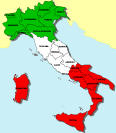

|

A
família Victorelli
original do norte da Itália,
Regione di Veneto
da cidade de
Concordia di Sagittaria
chegou ao Brasil em 1888.Santi Vitorel ainda criança foi o primeiro a desembarcar. A familia cresceu inicialmente no estado de São Paulo e depois no Norte do Paraná.
|
|
Rua Mauá, 456 - Alto da Glória - CEP: 80030-200 - Curitiba - PR - Fone: (41) 3016-0009
|